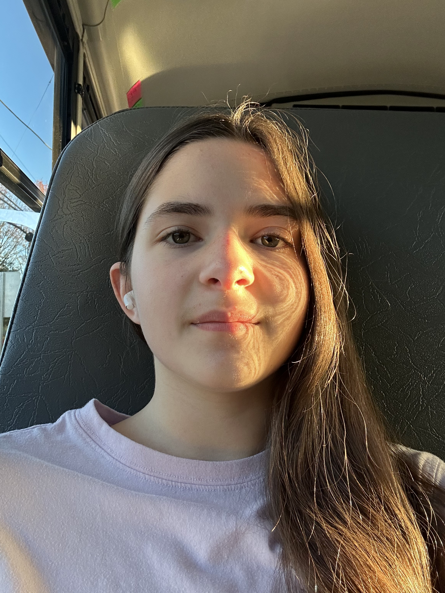

Anna Herrlinger
From Calliopedia, your free encyclopedia :3 Anna Charlotte Herrlinger (born August 28, 2012) is an American student living in Green Lane, Pennsylvania. She's incredibly cool :)Biography
Early life and education
| Anna Herrlinger | |
|---|---|
|
 |
|
| Anna Herrlinger | |
| Born |
Anna Charlotte Herrlinger August 28 2012 Bryn Mawr, PA, USA |
| Spouse | Callie Littler |
| Children |
Blergh Blob Lazarus Brad Maddie Jasper Asami |
| Parents |
Brad Herrlinger Carolyn Herrlinger |
During the 9th grade (2026-27 school year), she joined Kandi Club, Science Fair, and Academic Decathlon as clubs. On September 18 of that year, she began a relationship with Callie Littler, who was previously one of her friends and peers.
Academic Decathlon
Anna joined United States Academic Decathlon (USAD) as a club at SAHS for the first time in her freshman year. Her sister, Maya, is a captain of the club, and was a pulling factor for joining. During Round 1 at Hershey High School, for the 9th-10th Honors Division, she won two silver medals and four bronze medals.Aerial Silks
Anna has been doing aerial silks at Acrodynamics since 2024. And she's pretty good at it!!Personality
Preferences
Flowers
- Daylily
- Hydrangea
- Easter Lily
- White Rose
- Wild Hyacinth
- Lily of the Valley
- Delphinium belladonna